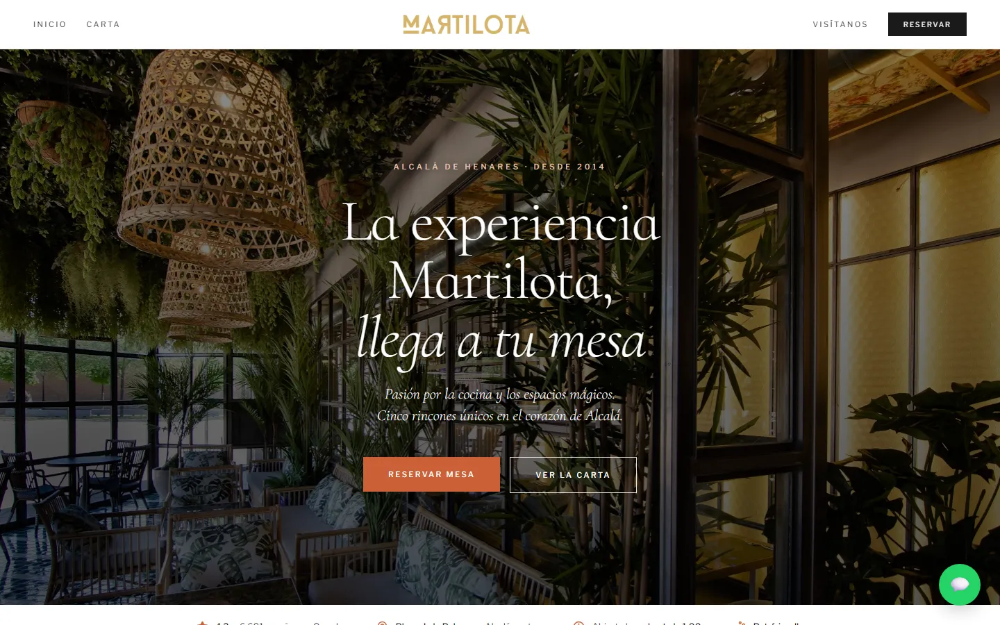
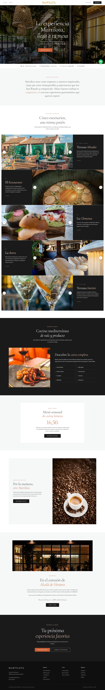
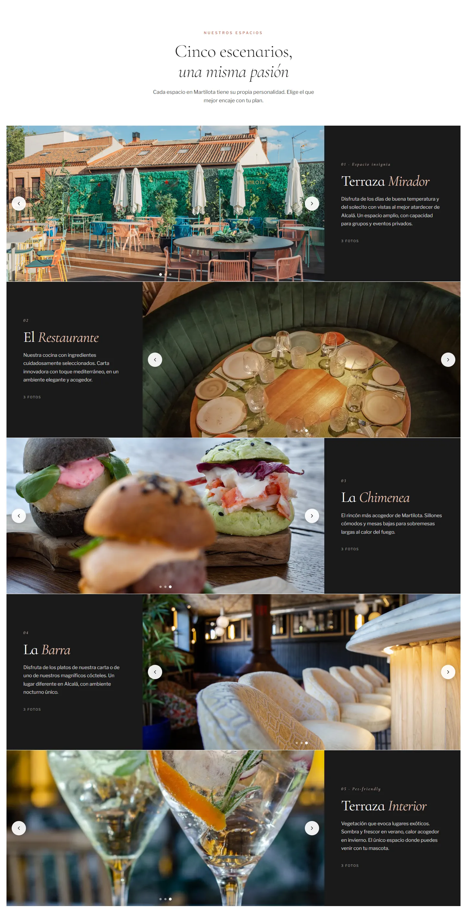
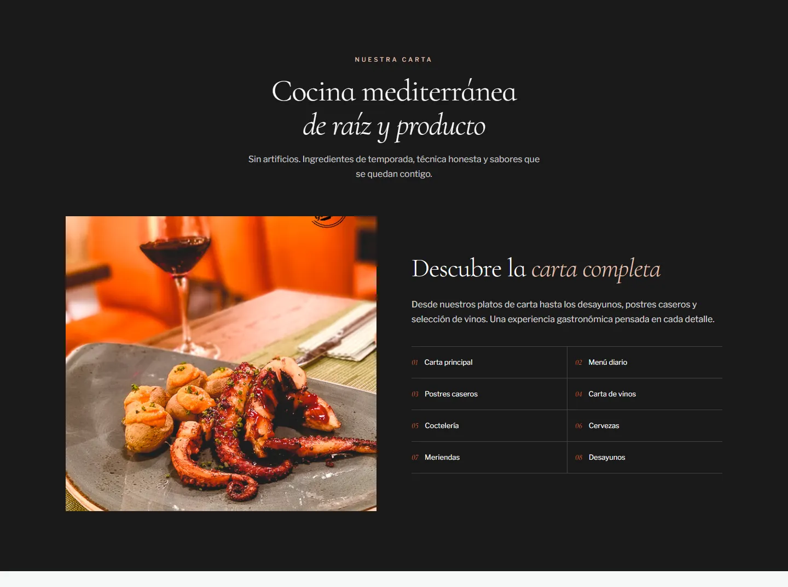
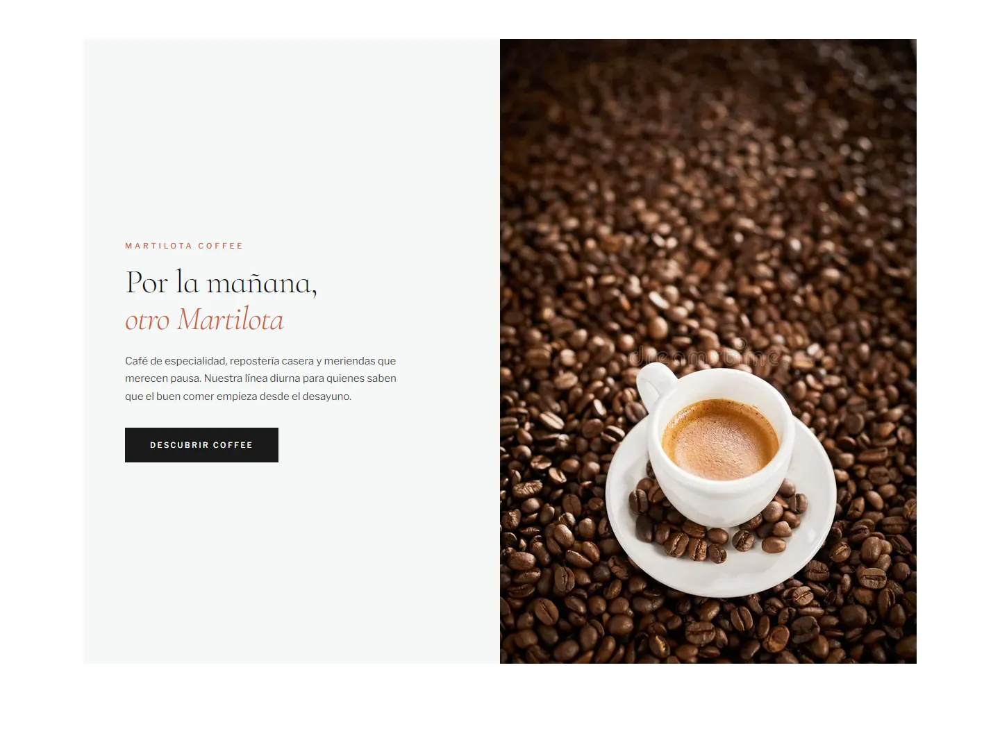
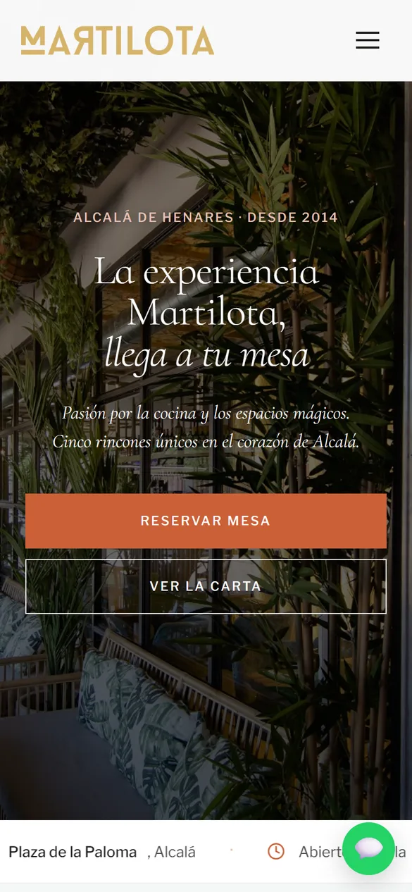
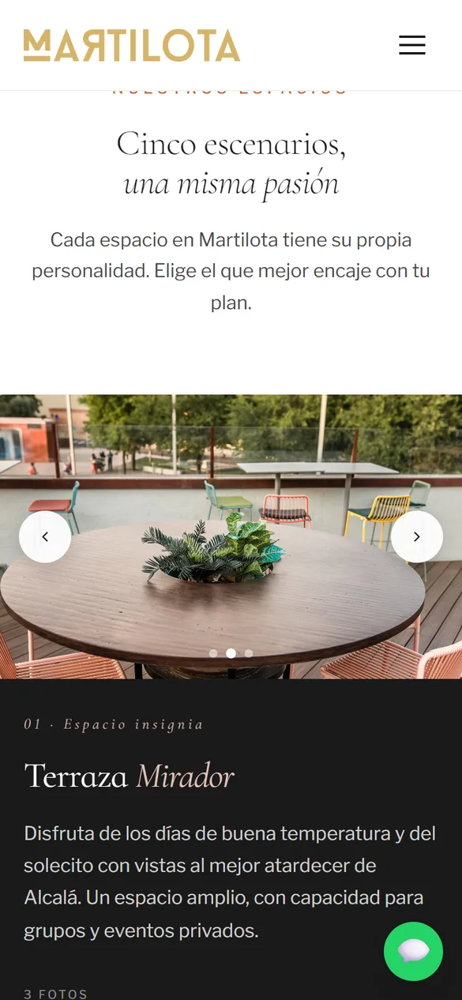
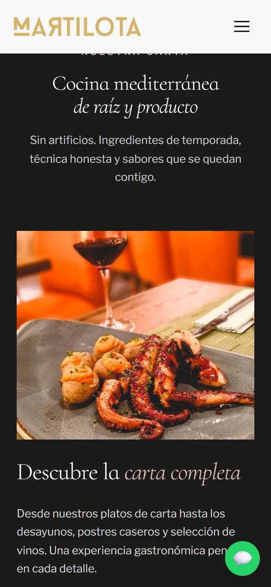
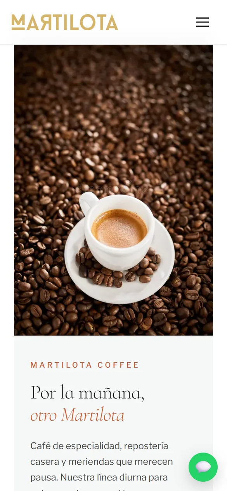

Caso 01 · Restauración · Alcalá de Henares
Martilota
Una experiencia única, también en la web. Cinco espacios, cocina mediterránea de raíz y un restaurante con historia desde 2014: el reto era que la web lo transmitiera antes de que el cliente cruzara la puerta.

- 5espacios con personalidad propia
- 2014cocinando en Alcalá de Henares
- 0 €de comisión por reserva: directa por WhatsApp
01 — El reto
Una experiencia
excelente en la mesa.
Martilota no es un restaurante cualquiera: son cinco espacios, cada uno para un plan distinto, bajo la misma cocina mediterránea de producto. Su web anterior no transmitía nada de eso.
Era visualmente plana, costaba navegarla y no tenía llamadas a la acción claras. Quien llegaba no sabía qué espacio reservar ni si encajaba con su ocasión. La experiencia en la mesa era excelente; la digital, olvidable. El objetivo: una web que venda la experiencia antes de la reserva.
Recorrido
La web,
de arriba abajo.
- 01La emoción primero: la terraza y la reserva a un clic.
- 02Cinco escenarios para elegir dónde sentarse.
- 03La carta, clara y fácil de actualizar.
- 04Coffee, Alcalá y el cierre con la reserva.

02 — La solución
Seis decisiones
que llenan mesas.
-
01
Identidad de restaurante premium
Serif elegante, paleta cálida de tierra y crema y fotografía de ambiente. Un aspecto que posiciona sin excluir.
-
02
Los cinco espacios, protagonistas
Cada uno con su nombre, su carácter y su mejor momento. El cliente llega sabiendo dónde quiere sentarse.
-
03
Una carta viva
Carta, menú del día, desayunos, postres, vinos y coctelería por categorías, fácil de actualizar desde WordPress.
-
04
Reserva directa
WhatsApp integrado y un botón de reserva siempre a mano. Sin plataformas que se lleven comisión.
-
05
SEO local en Alcalá
Estructura pensada para búsquedas como «restaurante en Alcalá de Henares», con datos estructurados de restaurante.
-
06
Coffee, con voz propia
Desayunos, café de especialidad y meriendas en una sección aparte para captar al público de día.

03 — El diseño
Huele a mediterráneo
antes del scroll.
Cormorant InfantTitulares: elegancia y ritmo
Libre FranklinTexto: claridad para informar
- Carbón
#1A1A1A - Terracota
#CB6037 - Oro
#D6B46A - Rubor
#E5C3B8 - Mantel
#FFFFFF
El recorrido sigue a quien está decidiendo si reservar: primero la emoción de la terraza, después la historia de la casa, los cinco espacios para elegir el suyo, la carta para confirmar que la cocina está a la altura y, al final, la reserva. Un embudo de conversión disfrazado de experiencia.


04 — En el móvil
Pensada para
reservar desde la calle.





¿Te imaginas la tuya?
¿Tu negocio merece una web así?
Cuéntame qué necesitas y te propongo el camino más corto para conseguirlo. Presupuesto cerrado en 24 horas.